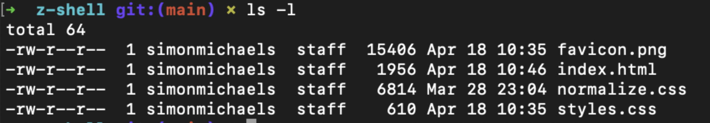

copy in terminal cp -R [sourcedir] [destdir]
Z-Shell is an superset of Bash. It is the default shell for MacOS
"pwd" prints the working directory
pwd -L (default action)pwd -P"cd [directory]" changes current working directory
"ls" lists stuff inside current working directory
ls -lDisplays the mode, number of links, owner, group, size (in bytes), and time of last modification for each file.
Navigate to the parent directory of the directory you want to change and running
"mv [current-filename] [new-filename]"
copy in terminal cp -R [sourcedir] [destdir]